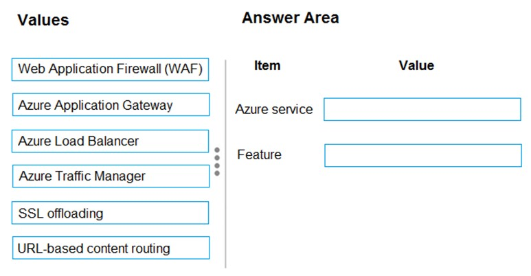
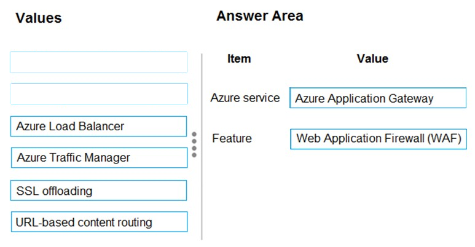
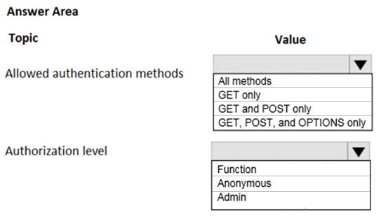

DRAG DROP -
A company has an existing web application that runs on virtual machines (VMs) in Azure.
You need to ensure that the application is protected from SQL injection attempts and uses a layer-7 load balancer. The solution must minimize disruption to the code for the existing web application.
What should you recommend? To answer, drag the appropriate values to the correct items. Each value may be used once, more than once, or not at all. You may need to drag the split bar between panes or scroll to view content.
NOTE: Each correct selection is worth one point.
Select and Place:

Correct Answer:

Box 1: Azure Application Gateway
Azure Application Gateway provides an application delivery controller (ADC) as a service. It offers various layer 7 load-balancing capabilities for your applications.
Box 2: Web Application Firwewall (WAF)
Application Gateway web application firewall (WAF) protects web applications from common vulnerabilities and exploits.
This is done through rules that are defined based on the OWASP core rule sets 3.0 or 2.2.9.
There are rules that detects SQL injection attacks.
References:
https://docs.microsoft.com/en-us/azure/application-gateway/application-gateway-faq https://docs.microsoft.com/en-us/azure/application-gateway/waf-overview
Note: This question is part of series of questions that present the same scenario. Each question in the series contains a unique solution that might meet the stated goals. Some question sets might have more than one correct solution, while others might not have a correct solution.
After you answer a question in this section, you will NOT be able to return to it. As a result, these questions will not appear in the review screen.
Your company has deployed several virtual machines (VMs) on-premises and to Azure. Azure ExpressRoute has been deployed and configured for on-premises to Azure connectivity.
Several VMs are exhibiting network connectivity issues.
You need to analyze the network traffic to determine whether packets are being allowed or denied to the VMs.
Solution: Use the Azure traffic analytics solution in Azure Log Analytics to analyze the network traffic.
Does the solution meet the goal?
Correct Answer:
B
Instead use Azure Network Watcher to run IP flow verify to analyze the network traffic.
References:
https://docs.microsoft.com/en-us/azure/network-watcher/network-watcher-monitoring-overview https://docs.microsoft.com/en-us/azure/network-watcher/network-watcher-ip-flow-verify-overview
Note: This question is part of series of questions that present the same scenario. Each question in the series contains a unique solution that might meet the stated goals. Some question sets might have more than one correct solution, while others might not have a correct solution.
After you answer a question in this section, you will NOT be able to return to it. As a result, these questions will not appear in the review screen.
Your company has deployed several virtual machines (VMs) on-premises and to Azure. Azure ExpressRoute has been deployed and configured for on-premises to Azure connectivity.
Several VMs are exhibiting network connectivity issues.
You need to analyze the network traffic to determine whether packets are being allowed or denied to the VMs.
Solution: Use Azure Network Watcher to run IP flow verify to analyze the network traffic.
Does the solution meet the goal?
Correct Answer:
A
The Network Watcher Network performance monitor is a cloud-based hybrid network monitoring solution that helps you monitor network performance between various points in your network infrastructure. It also helps you monitor network connectivity to service and application endpoints and monitor the performance of
Azure ExpressRoute.
Note:
IP flow verify checks if a packet is allowed or denied to or from a virtual machine. The information consists of direction, protocol, local IP, remote IP, local port, and remote port. If the packet is denied by a security group, the name of the rule that denied the packet is returned. While any source or destination IP can be chosen,
IP flow verify helps administrators quickly diagnose connectivity issues from or to the internet and from or to the on-premises environment.
IP flow verify looks at the rules for all Network Security Groups (NSGs) applied to the network interface, such as a subnet or virtual machine NIC. Traffic flow is then verified based on the configured settings to or from that network interface. IP flow verify is useful in confirming if a rule in a Network Security Group is blocking ingress or egress traffic to or from a virtual machine.
References:
https://docs.microsoft.com/en-us/azure/network-watcher/network-watcher-monitoring-overview https://docs.microsoft.com/en-us/azure/network-watcher/network-watcher-ip-flow-verify-overview
Note: This question is part of series of questions that present the same scenario. Each question in the series contains a unique solution that might meet the stated goals. Some question sets might have more than one correct solution, while others might not have a correct solution.
After you answer a question in this section, you will NOT be able to return to it. As a result, these questions will not appear in the review screen.
Your company has deployed several virtual machines (VMs) on-premises and to Azure. Azure ExpressRoute has been deployed and configured for on-premises to Azure connectivity.
Several VMs are exhibiting network connectivity issues.
You need to analyze the network traffic to determine whether packets are being allowed or denied to the VMs.
Solution: Install and configure the Log Analytics and Dependency Agents on all VMs. Use the Wire Data solution in Azure Log Analytics to analyze the network traffic.
Does the solution meet the goal?
Correct Answer:
B
Instead use Azure Network Watcher to run IP flow verify to analyze the network traffic.
References:
https://docs.microsoft.com/en-us/azure/network-watcher/network-watcher-monitoring-overview https://docs.microsoft.com/en-us/azure/network-watcher/network-watcher-ip-flow-verify-overview
HOTSPOT -
A company plans to implement an HTTP-based API to support a web app. The web app allows customers to check the status of their orders.
The API must meet the following requirements:
✑ Implement Azure Functions
✑ Provide public read-only operations
✑ Do not allow write operations
You need to recommend configuration options.
What should you recommend? To answer, configure the appropriate options in the dialog box in the answer area.
NOTE: Each correct selection is worth one point.
Hot Area:

Correct Answer:

Allowed authentication methods: GET only
Authorization level: Anonymous -
The option is Allow Anonymous requests. This option turns on authentication and authorization in App Service, but defers authorization decisions to your application code. For authenticated requests, App Service also passes along authentication information in the HTTP headers.
This option provides more flexibility in handling anonymous requests.
References:
https://docs.microsoft.com/en-us/azure/app-service/overview-authentication-authorization